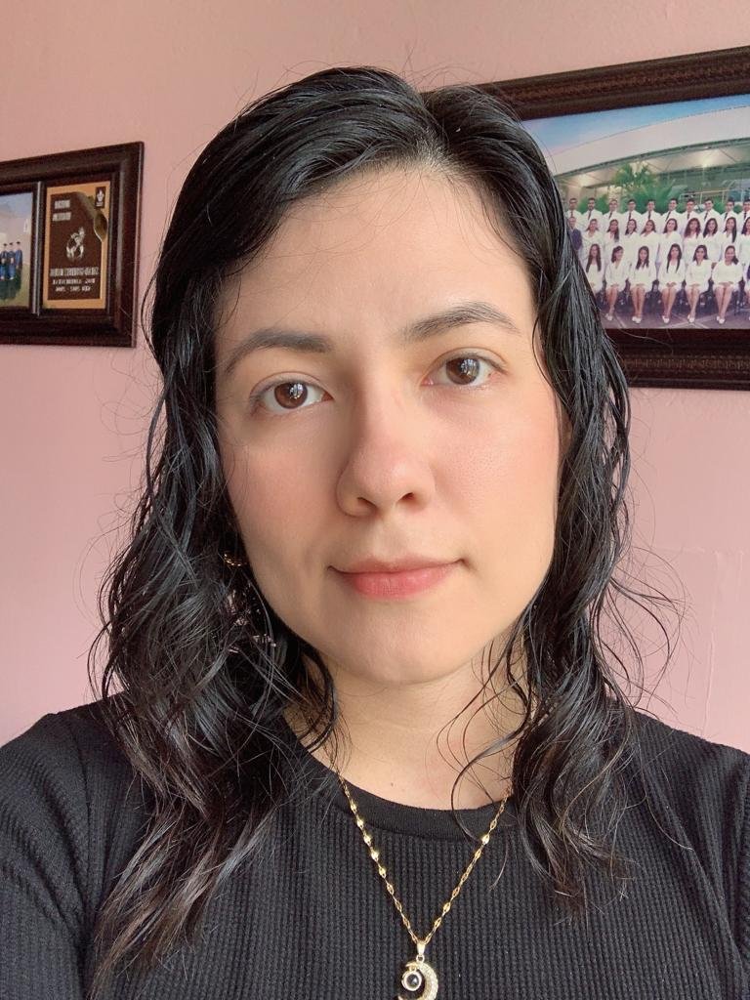

|  |
Saraid Gutierrez MateosHello! I'm a Junior FullStack Web Developer. |
👩💻 I am a passionate Junior Full Stack Developer with a background in implementing Management Systems (ISO) and vocational training. My engineering education has provided me with strong skills in teamwork, information documentation, and problem-solving.
🚀 I have knowledge in agile methodologies such as SCRUM and experience in Front End and Back End development using technologies like JavaScript, React, Redux, HTML5, PostgreSQL, Sequelize, and Node.js. I am highly organized, results-oriented, and adaptable to new challenges.
🌍 Furthermore, I have an English proficiency level of B2, which enables me to effectively communicate in bilingual environments.
| Year | Institution | Description | Technologies |
|---|---|---|---|
| 2022-2023 | Soy Henry Bootcamp | Designed and developed a physical movie shopping app that included features such as authentication, email delivery, integrated payment gateway, AI chat, different admin roles, search functionality, combined filters, sorting, and fetching information from its own API. |
|
| Year | Position | Company name | Description |
|---|---|---|---|
| 2019-2022 | QHSE | E&G Services of Mexico |
|
| 2018-2019 | Administrative Assistant | Geolis |
|
| ⭐ | Programming Languages: JavaScript |
| ⭐ | Frameworks: React, Redux, Node.js, Express |
| ⭐ | Database: PostgreSQL, Sequelize |
| ⭐ | Tools: Git, Slack |
| ⭐ | Agile Methodology: Scrum |
| ⭐ | Effective communication |
| ⭐ | Analytical thinking |
| ⭐ | Adaptability and flexibility |
| ⭐ | Teamwork |
| ⭐ | Problem-solving |